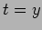
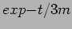
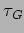

Without additional information the best we can do is to use the long-term climatological prediction. Based on the data plotted in Fig. 5.5.3 showing the lengths of periods of continuous good and bad weather it was found that approximately 80.35% of all time constitutes good weather and the remainder (19.65%) is bad weather.
The first model (M1) is based on the assumption that the weather will continue in its current state for a period roughly equal to the length of time it has already been in that state continuously, thereafter the probability of maintaining this state decreases, assumed exponentially with a decay length some multiple of the current stability period. As an example, assume the weather has been good for about 3 hours. We then assume it will continue to remain good for about another 3 hours with the probability decaying as  - the 3 being the amount of time already in this state,  being a scale factor yet to be determined. Fig. 5.5.3 shows the variation of lengths of consecutive periods of good and bad weather based on humidity threshold (80% trigger) and clearing stability time of 30 minutes. We see that shorter periods are most common with the average length of good periods being 31.5 hours and bad periods being 7.7 hours. Cumulative plots are shown in Fig. 5.5.3. The overall fraction of time classified as good resulted in 80.35% of all time with bad weather making up the remainder.
A set of simulations were run using the extracted period data (Fig. 5.5.3) to determine the effectiveness of this prediction mechanism. Every 15 minutes through the available period a determination is made of the current weather state and how long ( good) or ( bad) it has been in that state. A prediction is made at a number steps into the future (192 steps of 15 minutes constituting upto 48 hours look-ahead) using the rule specified in Eqn.14. At each step the prediction is compared to the actual weather state at the time and counted as either a hit (correct prediction) or miss (incorrect prediction). The final percentages shown in Fig. 5.5.3 against look-ahead time for a number of decay scale factors . The baseline of 80.35% represents the worst we should be able to acheive on average based on long-term climatological prediction - basically if we always just guess that the weather will be good this will work 80.35% of the time. Fig. 5.5.3 shows the crossover point - the length of look-ahead where the prediction becomes worse than long-term climatological prediction as a function of the decay scale factor . This is seen to converge towards a value of 30-31 hours which is close to the average length of good weather period.
|
|
|
|